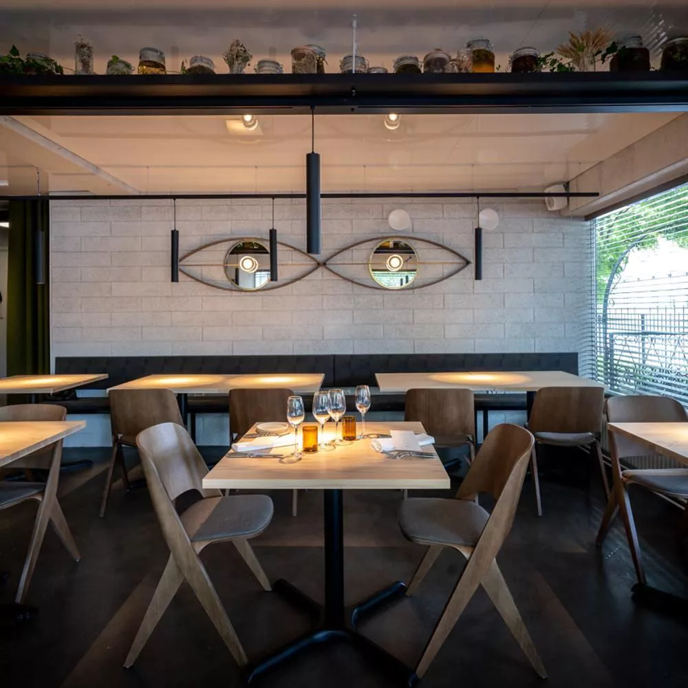

Restaurants of Finland
1. Palace, Helsinki
Established in 1952, Palace has always been a pioneer of Finnish gastronomy. It was the first Finnish restaurant to receive a Michelin star in 1987. With views over the city and its seascape, the restaurant is located on the 10th floor of a historically significant building that was originally constructed to mark the 1952 Olympic Games in Helsinki. Today, the Palace kitchen is headed by Chef Eero Vottonen who, together with his team, aims to create an innovative yet sophisticated Nordic dining experience.
2. Grön, Helsinki

At Grön they offer a set menu based on the seasonal highest-quality Finnish and Nordic produce, their menu reflects the natural flow of ingredients. What grows now determines their menu. They offer two menu options that evolve within a particular season - Spring, Summer, Autumn and the Winter season menu. During each season they discover different ingredients from producers, forest, ocean, wild and their own farm. They aim to highlight them when they are at their absolute best.
3. BasBas, Helsinki
Lovely simple flavors, delicious wines, warm bistrofeel.
4. Kaskis, Turku
Already within a few years, Kaskis earned his place among the most prestigious restaurants in Finland. It became an institution whose style has not become tied to any particular genre over the years. In 2016, Kaskis abandoned the à la carte menu and switched to serving set menus exclusively. The fine-craftsmanship restaurant serves what feels and tastes best at the time — above all, keeping ingredients and the seasons in mind..
5. Vinkkeli, Helsinki
Restaurant Vinkkeli is located in the heart of the Kaartinkaupunki neighborhood, at the intersection of Korkeavuorenkatu and Pieni Roobertinkinkatu. Vinkkeli can be described as a food and wine restaurant, presenting a friendly, honest, and uncomplicated take on classic cuisine, where the wine and drink selection is given the same devotion as the selection of ingredients in the kitchen. The wine list covers the important varieties while featuring those best indicative of their origin.